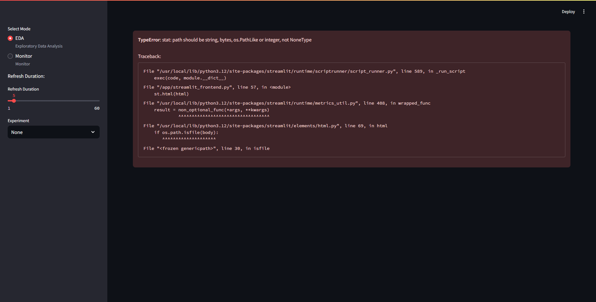

Running the ObServML Application locally
Setting up the development/local environment.
The "main" branch contains production ready codes, which can be used to build Docker images. Images play a definitive role in running the application on several instances, and provide an easy way to set up the system. Locally running the system is preferable during development phase, as you do not have to wait for the image build time. Note, this tutorial is only required if you DO NOT USE DOCKER.
Follow the steps to set up the environment for the "main" branch of the repository:
- install Git
- download and install graphviz
- download and install python 3.11.9
- Create a virtual environment and project.
- git clone git@github.com:adamipkovich/observml.git -- The repository is publicly available.
- git pull
- git checkout main
- optional -- navigate into the folder (cd or through IDE) - or open it as a separate project.
- create a python virtual environment, preferably through IDE
- pip install -r requirements.txt --> these are required by the backend.
- pip install streamlit hydra-core mkdocs uvicorn gunicorn tensorflow
- or you can pip install -r full_deps.txt which will recreate my virtual environment, and will install various unused packages.
Running the app locally.
To start mlflow, open up a terminal and enter:
mlflow server
Rabbit docker image is a must have.
docker run --publish 5100:5672 rabbitmq:3.12.14-management-alpine
To start backend, enter this into the command line:
python ExperimentHubAPI.py
Frontend:
streamlit run streamlit_frontend.py
Why use the app locally? If you are trying to fix the code or simply experiment with it, it might be beneficial not to start a Linux container just to test a feature.
The template project in the "main" repository contains test cases, therefore, one can also test without switching to other branches. For example, run:
python train_script_local.py
after starting all services, provided that at least one of the configs.yaml's test cases are NOT commented out.
Interfaces
If the compose file has not been changed, then the mlflow client can be opened thought a webbrowser:
http://localhost:5000

The backend and frontend is also viewable: Backend:
http://localhost:8010/docs
 Frontend:
Frontend:
http://localhost:8105

The frontend will show error if no models are found. DO NOT PANIC! It will work after the first training/loading session.
If everything opened, then congratulations, you have set up the application!